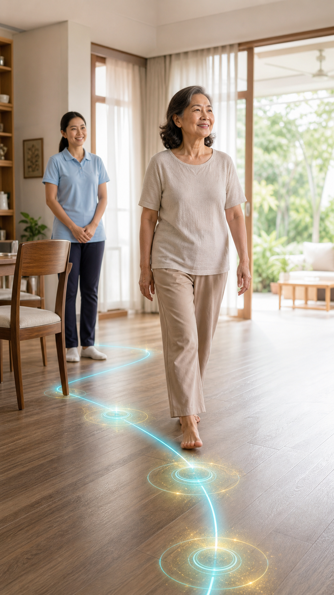

แผน 02 · CARE PLAN TYPE 02 · TEAM 4

แผนฟื้นฟูหลักของคุณ
แผนคืนแรง
หลังกลับบ้าน
ค่อย ๆ นำแรงและความทนทานกลับมาใช้กับกิจวัตรจริง โดยไม่เร่งจนหมดแรงหรือพักนานจนร่างกายถดถอย
โรค/ภาวะที่เกี่ยวข้อง
กดที่หัวข้อเพื่อดูว่าแต่ละภาวะเกี่ยวข้องกับการคืนแรงหลังกลับบ้านอย่างไร
อ่อนแรงหลังนอนโรงพยาบาลช่วงที่นอนพักและเคลื่อนไหวน้อย ร่างกายอาจสูญเสียทั้งแรง ความทนทาน และความมั่นใจ แม้โรคหลักจะดีขึ้นแล้ว จึงควรเพิ่มกิจกรรมกลับมาอย่างเป็นลำดับ
3 ปัญหาหลักที่ควรจัดการก่อน
เริ่มจากสิ่งที่ทำเองได้ก่อน และใช้การประเมินเพิ่มเติมเฉพาะจุดที่ช่วยให้แผนแม่นขึ้น
0/4
01
ความทนทานต่อกิจกรรมยังไม่เพียงพอ
อาบน้ำ แต่งตัว เดินในบ้าน หรือทำงานเบา ๆ แล้วต้องหยุดพักเร็วกว่าก่อนป่วย แสดงว่าร่างกายยังมีแรงสำรองไม่พอกับชีวิตประจำวัน
แผนจัดการปัญหานี้
แบ่งกิจกรรมเป็นช่วงสั้น สลับพักก่อนเหนื่อยมาก และเพิ่มเวลาทีละน้อย เป้าหมายแรกไม่ใช่ทำให้หนัก แต่ทำให้ทำกิจกรรมจำเป็นได้ต่อเนื่องขึ้นโดยอาการไม่ทรุด
ประเมินเพิ่มด้วยตัวเอง
ประเมินโดยนักกายภาพเมื่อจำเป็น
การตอบสนองของร่างกายขณะออกแรงชีพจร ความดัน อาการหน้ามืด และความทนต่อกิจกรรมนักกายภาพประเมิน
02
แรงขาลด ทำให้ลุกยืนและเดินต่อได้ไม่นาน
การนอนหรือนั่งนานทำให้แรงที่ใช้ยกตัวจากเก้าอี้ลดลง เมื่อการลุกแต่ละครั้งใช้แรงมาก จึงเหลือแรงสำหรับเดินและทำกิจกรรมอื่นน้อยลง
แผนจัดการปัญหานี้
ฝึกลุกยืนจากเก้าอี้ที่มั่นคงด้วยจังหวะควบคุม แล้วนำแรงที่ได้กลับไปใช้กับการเดินระยะสั้นจริงในบ้าน เพิ่มจำนวนครั้งก่อนเพิ่มความเร็ว
ประเมินเพิ่มด้วยตัวเอง
ประเมินโดยนักกายภาพเมื่อจำเป็น
แรงเชิงหน้าที่และรูปแบบการชดเชยดูการลงน้ำหนัก การใช้มือดัน และคุณภาพการเดินหลังลุกนักกายภาพประเมิน
03
จังหวะกิจกรรมและการพักยังไม่ช่วยให้ร่างกายฟื้นตัว
การทำรวดเดียวจนหมดแรงอาจทำให้วันถัดไปทำได้น้อยลง ขณะที่การพักทั้งวันก็ทำให้แรงกลับมาช้า จึงต้องหาจังหวะที่ทำซ้ำได้ทุกวัน
แผนจัดการปัญหานี้
เลือกกิจกรรมสำคัญก่อน แบ่งเป็นช่วง และพักก่อนหมดแรง ใช้วันที่อาการดีเพิ่มเพียงเล็กน้อย ไม่เร่งชดเชยจนเหนื่อยสะสม
- วางกิจกรรมที่จำเป็นในช่วงเวลาที่มีแรงมากที่สุด
- จบแต่ละรอบโดยยังรู้สึกว่าสามารถทำต่อได้อีกเล็กน้อย
ประเมินโดยนักกายภาพเมื่อจำเป็น
โรคประจำตัว ยา และระดับการเพิ่มกิจกรรมช่วยแยกว่าเหนื่อยจากการพักนานหรือมีข้อจำกัดที่ต้องปรับแผนเฉพาะนักกายภาพประเมิน
โปรแกรมเริ่มต้น
คืนแรงด้วยกิจกรรมสั้นที่ทำซ้ำได้
เริ่มจาก 2 ท่าที่พาแรงกลับไปใช้กับการลุกและเดินจริง หยุดทันทีหากมีเจ็บหน้าอก หน้ามืด หอบผิดปกติ หรืออาการทรุด
ท่าที่ 1 · สร้างแรงขา
ลุกยืนจากเก้าอี้แบบควบคุม
ฝึกแรงที่จำเป็นต่อการลุกจากเตียง เข้าห้องน้ำ และเริ่มเดิน
จำนวนเริ่มต้น3-5 ครั้ง
จำนวนรอบ1-2 รอบ
ความถี่
ความหนัก
เวลาและปริมาณ
รูปแบบ
วางเท้าใต้เข่า โน้มตัวไปข้างหน้าเล็กน้อย ยืนขึ้นช้า ๆ แล้วนั่งกลับอย่างควบคุม ใช้มือช่วยได้ถ้าจำเป็น และเลือกเก้าอี้ที่ไม่เลื่อน
ท่าที่ 2 · เพิ่มความทนทาน
เดินเป็นช่วงสั้นในบ้าน
เพิ่มเวลาที่เคลื่อนไหวได้โดยไม่สะสมความเหนื่อยมากเกินไป
เดินต่อรอบ1-3 นาที
จำนวนรอบ2-3 รอบ
ความถี่
ความหนัก
เวลาและปริมาณ
รูปแบบ
เลือกทางเดินโล่งและมีเก้าอี้พักใกล้ ๆ เดินด้วยความเร็วที่ยังพูดเป็นประโยคสั้นได้ พักจนหายเหนื่อยก่อนเริ่มรอบถัดไป
เมื่อไรควรลดระดับหรือหยุด
สิ่งที่ปรับตามโรคประจำตัว
ปรับโปรแกรมให้เฉพาะตัวขึ้น
ตัวเลขที่คุณกรอกจะช่วยปรับเวลาฝึก จำนวนครั้ง จุดพัก และลำดับกิจกรรมให้เหมาะกับกำลังตอนนี้
ตอบแบบประเมินเพิ่มอีก 2 หัวข้อ เพื่อสร้างแผนเฉพาะตัว
แผนของคุณได้รับการปรับแล้ว
นำข้อความนี้ไปวางใน AI ที่คุณใช้ เช่น ChatGPT, Claude, Gemini, Grok หรือแอปอื่น ๆ เพื่อให้ช่วยวิเคราะห์อาการและถามต่อจากข้อมูลของคุณได้